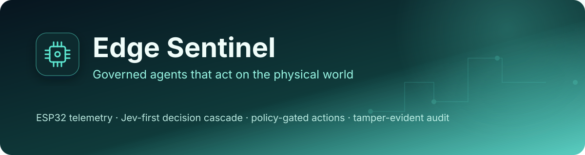
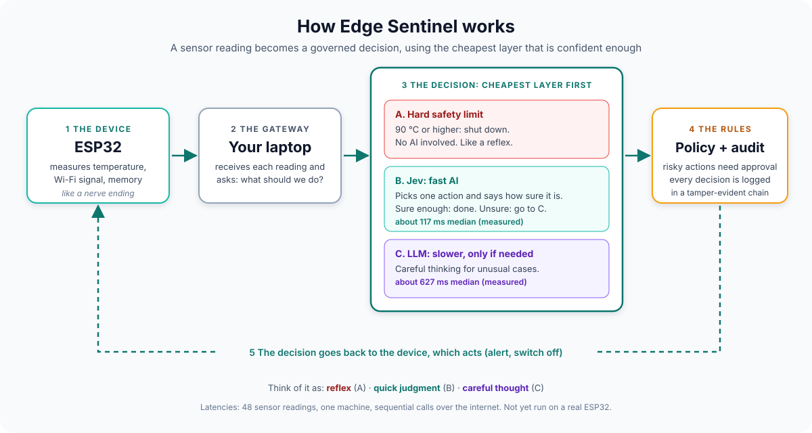

Portfolio project: agents + hardware + governance
Edge Sentinel
Governed agents that act on the physical world
An ESP32 streams telemetry to a gateway. A decision cascade picks an action (ignore, log, alert, shutdown): a local hard limit first, then Jev for fast typed decisions, then an LLM only when Jev is unsure. Every action passes a policy layer and lands in a hash-chained audit log.
See what is measuredView the repoWhat is not built
- 35 unit tests passing
- Firmware compiles (CI builds it)
- Simulated sensor data
- Never run on a board
- Live Jev and Haiku comparison: 48 readings

01
The problem
An agent that acts on hardware must stay safe when its models are slow, wrong or down.
The agent projects in this portfolio govern what software agents may do, with approvals, budgets and audit trails. This one asks what changes when the action touches hardware: a wrong call can cost a device, and the model's answer cannot be the thing that decides how risky it is.
Approvals that anyone can grant
A code review of the earlier repos found approvals that anyone can grant to themselves.
Approvals nothing checks
An approval that is recorded but never checked before execution looks like a gate and behaves like a notification.
A policy that trusts the model
A code review found a policy that trusts a model's own risk label. Here risk comes from a fixed table, not the model.
02
How it works
The ESP32 measures. A gateway asks for a decision. The decision tries the cheapest layer that is confident enough: a hard safety limit with no AI, then Jev (fast, and it says how sure it is), then an LLM only for unusual cases. A policy layer decides what is allowed and logs it. The device then acts on the result.

Swipe the diagram sideways to see all of it.
Stages of the diagram, one at a time
Stage 1 The device
ESP32 measures temperature, Wi-Fi signal, memory, like a nerve ending.
Firmware compiles, but has never run on a board.
Stage 2 The gateway
Your laptop receives each reading and asks: what should we do?
Stage 3 The decision: cheapest layer first
A. Hard safety limit: 90 °C or higher: shut down. No AI involved. Like a reflex.
B. Jev: fast AI. Picks one action and says how sure it is. Sure enough: done. Unsure: go to C. About 117 ms median (measured).
C. LLM: slower, only if needed. Careful thinking for unusual cases. About 627 ms median (measured).
Stage 4 The rules
Policy + audit: risky actions need approval; every decision is logged in a tamper-evident chain.
Stage 5 The decision returns
The decision goes back to the device, which acts (alert, switch off).
Relay delivery is not built; the device-side action has not been run on hardware.
03
What is measured
Everything below is on simulated or hand-built data. Each table carries its caveat directly underneath.
Run on 2026-10-05 with benchmarks/sensor_eval.py: 48 readings (12 temperatures including the 59/60, 74/75 and 89/90 boundaries, across good and bad Wi-Fi and heap). Both models got the same instruction with the thresholds spelled out. Labels come from the same written policy, so this measures policy-following, not independent accuracy. Requests were sequential over the public internet, so latency includes the network.
| Metric | Jev (jev-latest) | Claude Haiku 4.5 |
|---|---|---|
| Agreement with the policy | 46 of 48 (96%) on this run; 45 of 48 (94%) on an earlier run | 41 of 48 (85%), one run |
| Latency p50 / p95 | 117 / 182 ms (earlier run: 125 / 167 ms) | 627 / 809 ms |
| Confidence signal | yes: 30 of 48 readings at or above 0.8, all 30 correct | none returned |
| Confident but wrong | 0 | not applicable |
Caveat 48 hand-built readings, one run for Haiku and two for Jev, a small model chosen for speed, and labels taken from the policy written in the prompt. A larger model, a differently worded prompt, or real sensor data could change the gap.
What it does show: a calibrated confidence signal lets the cascade catch its own uncertain calls, while the LLM was wrong silently.
Jev's misses were both 89 °C readings labeled "alert" that it called "log", at confidence 0.35 and 0.74. Both are below the 0.8 threshold, so the cascade would have escalated them. Haiku's seven misses were not flagged in any way: it skipped the low-heap rule on four readings (60/61 °C with 10,000 bytes free), called 74 °C "ignore" where the policy says "log", called 89 °C "log" twice instead of "alert", and called 60 °C with weak Wi-Fi and low heap "shutdown", an over-reaction.
Source: benchmarks/sensor_eval_results.json (Jev) and benchmarks/sensor_eval_llm_results.json (Haiku)
Measured in-process on an Apple M4 Pro over 2,000 readings (benchmarks/latency_probe.py).
| Step | p50 | p95 |
|---|---|---|
| Cascade (rules path) | 0.001 ms | 0.002 ms |
| Audit append | 0.063 ms | 0.108 ms |
Caveat This excludes Wi-Fi, HTTP and any model call, so it is a floor and not an end-to-end figure.
Source: benchmarks/latency_probe.py
Compile the firmware: esp32dev, espressif32@7.1.3, built in CI.
| Resource | Used |
|---|---|
| RAM | 14.3% |
| Flash | 70.3% |
Caveat The firmware compiles (CI builds it) but has never run on a board. Flashing, relay delivery and end-to-end latency over Wi-Fi are not measured.
Source: firmware/platformio.ini, .github/workflows/ci.yml
04
Architecture pattern
Pattern Decision cascade with a policy layer: local hard limit, then Jev, then LLM on low confidence, then rules. The model proposes; a fixed table decides risk.
Risk comes from a fixed table, not the model. Every model failure degrades to rules, and critical readings never wait on a model. Every action passes a policy tier and lands in a hash-chained audit log; operator approvals are single-use and expiring.
- ESP32temperature, RSSI, heap, via POST /readings
- Gateway: hard limit?yes: shutdown, no model involved
- Jevtyped action plus confidence; confident: take the action
- LLM / rulesonly when Jev is unsure or down
- Policy tierrisk from a fixed table; unknown operations denied
- Hash-chained audit logreading, source and confidence behind each decision; decision returns to the ESP32
- Approvals (operator path)request, approve, execute; SQLite, expiring, single-use
05
Competencies demonstrated
Systems design under uncertainty
Every model failure degrades to rules; critical readings never wait on a model.
Risk and governance
Per-operation policy table, unknown operations denied, single-use expiring approvals.
Auditability
Hash-chained log storing the reading, source and confidence behind each decision.
Hardware integration
ESP32 firmware and a written interface contract.
Measurement discipline
Unmeasured hops are labeled unmeasured; numbers state what they exclude.
06
What is not built or not verified yet
Taken from the repository's own README and its known limits. This is part of the pitch: the gaps are known, written down and not rounded away.
- not verified
Flashed hardware
The firmware compiles (CI builds it) but has never run on a board.
- not built
Relay delivery
Deliver approved commands to the device relay over MQTT: not done.
- not verified
End-to-end latency over Wi-Fi
Not measured. The gateway-side figures are a floor, not an end-to-end number.
- limit
Simulated data
The decision-ramp chart and the dashboard capture come from a scripted temperature ramp, not from a device.
- limit
Authentication is static bearer tokens
Shared secrets read from environment variables: no rotation, no expiry, no per-device binding, no TLS in this repo. It is not a full identity system.
- limit
Audit chain
The audit chain detects edits and deletions, but anyone with file access can rewrite the whole chain.
- limit
Demo mode
If the token variables are unset, auth is disabled, the gateway warns loudly, and operator identity is a self-declared header. Do not expose the gateway beyond a trusted network.
- limit
Small benchmark
48 hand-built readings, one run for Haiku and two for Jev; labels come from the same written policy, so it measures policy-following, not independent accuracy.
07
Roadmap
- DoneCompile the firmware (
esp32dev,espressif32@7.1.3, RAM 14.3%, flash 70.3%, built in CI) - Not doneFlash a real board and measure the Wi-Fi + HTTP hop
- DoneRun against the live Jev API and verify how confidence is returned
- Not doneDeliver approved commands to the device relay over MQTT
- DoneCompare Jev against an LLM on the same sensor scenarios (48 readings)
- DoneDashboard for
/history(/dashboard, single file, no build step) - DoneAuthentication for devices and operators (static tokens; rotation, TLS and per-device binding still open)